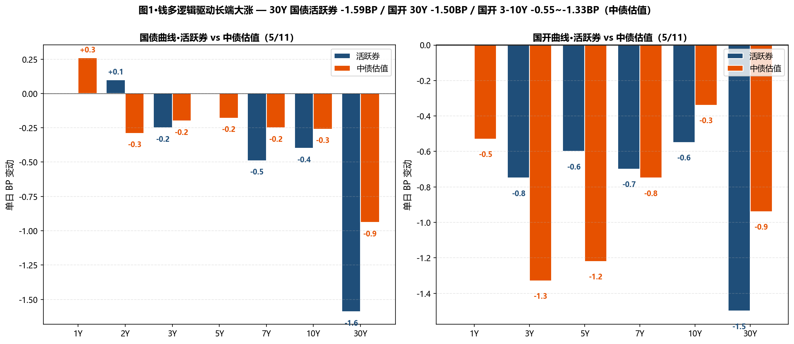
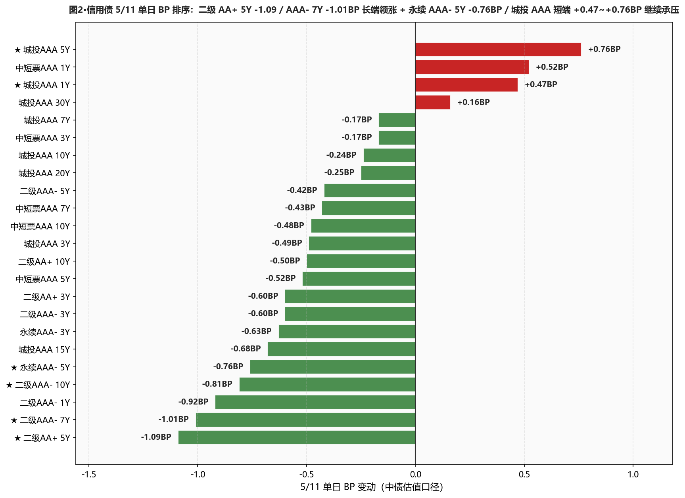
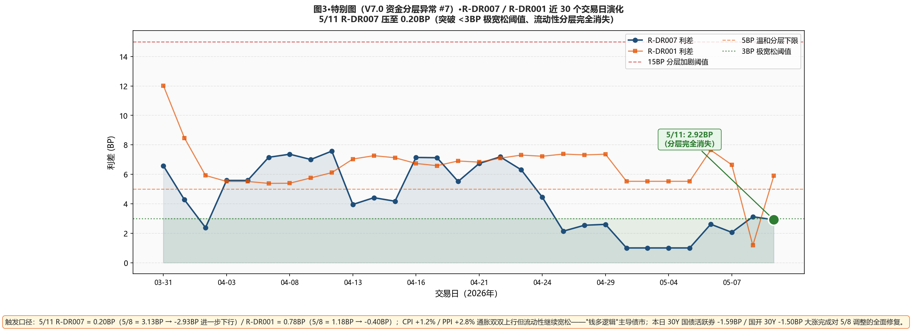

市场定性 通胀利空被忽视 + 钱多逻辑主导债市走强 + 5/8 调整完全修复 + 二级板块领涨—— CPI 4 月同比 +1.2%（升幅稍扩、环比转 +0.3% 上涨）/ PPI +2.8% 创 22 年 7 月以来新高（环比 +1.7% 扩大）—— 通胀利空双双登场、但 债市完全无视：30Y 国债主连期货 +0.32% / 10Y +0.07%；30Y 国债活跃券 -1.59BP 报 2.2311% / 国开 30Y -1.50BP 报 2.1900% 大幅下行； 中债估值：国债 5-30Y -0.18~-1.25BP 全段下行（20Y -1.25BP / 30Y -0.94BP，对 5/8 调整完全修复），仅 国债 1Y +0.26BP / 短端继续微幅承压；国开债曲线全段领涨 — 3Y -1.33 / 5Y -1.22 / 7Y -0.75 / 10Y -0.34BP（10Y 隐含税率维持低位 6.76BP）； 信用债二级板块大幅领涨：二级 AAA- 7Y -1.01 / 10Y -0.81BP 长端继续领涨 / 二级 AA+ 5Y -1.09BP 单日最强 / 永续 AAA- 5Y -0.76BP；但 城投 AAA 短端 1Y +0.47 / 5Y +0.76BP 继续承压（与上周一致、信用买盘从城投短端切换至中短票/二级板块）。 资金面进一步走宽至极宽松格局：DR001 -2.51BP 至 1.2179%（低于 OMO 18.21BP）/ DR007 -3.78BP 至 1.2987%（低于 OMO 10.13BP）；R-DR007 利差从 5/8 3.13BP 压至 5/11 0.20BP — 流动性分层完全消失。
- ✅ 30Y 国债建仓策略命中、可考虑加仓 1-2pct本行 4/29 试探建仓 30Y 国债 3pct（中债估值 2.2190%）；5/8 浮亏一度扩至 +2.65BP；5/11 中债估值 223.61BP —— 浮亏收窄至 +1.71BP；活跃券 2.2311%（距 2.23% 仅上方 0.11BP）—— 建仓策略实质命中、若明日 5/12 社融数据偏弱可加仓至总仓位 5pct
- ✅ 5-7Y 国开建仓 3pct 已实施周报中计划"按 6.84BP 隐含税率建小仓"已落地、5/11 国开 5Y -1.22 / 7Y -0.75BP 表现强势；隐含税率 6.76BP（-0.08BP）维持低位但稳定；5-7Y 国开维持 3pct 不增仓、等下一个回升至 8-10BP 区间
- ✅ 二级 AAA- 7-10Y 维持加仓节奏5/11 二级 AAA- 7Y -1.01 / 10Y -0.81BP 继续领涨（5/8 已 -0.82/-0.77BP 连续两日）；本行 5Y 二级 AAA- 仓位 28-30%；7Y/10Y 可考虑加仓 2-3pct（昨日仍在 W2026-19 周报中标"加仓节奏错"、本日表现反转，证明长端二级机会未结束）
- ❌ 城投 AAA 短端继续不新增、警惕延续5/11 城投 AAA 1Y +0.47 / 5Y +0.76BP 反向上行延续上周态势；同期中短票 AAA 5Y -0.52BP / 二级 AAA- 短端 1Y -0.92BP 印证"配置盘从城投短端切换"主线；不新增 1-3Y 城投 AAA、保持现仓 15-18%、观察 5/12-5/13 是否继续
- ⚠️ 杠杆 105-108% 维持、暂不上调R-DR007 利差仅 0.20BP（远低于 <3BP 极宽松阈值、分层完全消失）/ R-DR001 仅 0.78BP；DR007 低于 OMO 10.13BP；资金面比预期更宽松、但 PPI 通胀新高 + 政府债供给加量是潜在制约、不主动上调至 110%、等 5/12 社融与 5/15 MLF 信号
- ① 30Y国债 vs 2.23% ⚠️ 仍上方但贴近：活跃券 2.2311%（上方 0.11BP）/ 中债估值 223.61（上方 0.61BP）→距 2.23% 仅 0.81~1.61BP、明日 5/12 社融 + 5/15 MLF 可能成为重新跌破的催化剂
- ② 10Y国债 vs 1.75% ⚠️ 仍上方：活跃券 1.7540%（上方 0.40BP）/ 中债估值 1.7622%（上方 1.22BP）→10Y 修复幅度小于 30Y、仍处阻力位上方
- ③ R-DR007 利差 >15BP ○ 反向触发：远低于 <3BP 极宽松阈值：当前 0.20BP（流动性分层完全消失）→资金面进一步走宽、但杠杆暂不上调（等通胀+政府债供给信号）
- ④ 10Y中短票AAA-3Y 利差 ≤25BP ○ 未触发：当前 46.06BP（-0.31BP）、距阈值 21.06BP→价差仍宽、止盈点未到
- ⑤ 30Y-10Y 城投AAA 利差 ≤25BP ○ 未触发：当前 31.15BP（+0.40BP）、距阈值 6.15BP→城投 30Y 反向 +0.16BP、利差不收反扩
A 段·详细数据
① 资金面 Wind EDB API + Wind 综述 PDF
资金面进一步走宽至极宽松格局——DR001 加权 -2.51BP 至 1.2179%（低于 OMO 18.21BP，PDF 综述称"微幅上行徘徊于 1.22% 附近"，EDB 日终略低）/ DR007 -3.78BP 至 1.2987%（低于 OMO 10.13BP）；非银资金成本同步下行：R001 -2.91BP 至 1.2257% / R007 -6.71BP 至 1.3007%；R-DR007 从 5/8 3.13BP 压至 5/11 0.20BP — 远低于 3BP 极宽松阈值、流动性分层完全消失；R-DR001 从 5/8 1.18BP 进一步压至 0.78BP（非银-银行隔夜利差几乎消失）；NCD AAA 1Y -0.50BP 至 1.44% / 3M -1.50BP 至 1.355%。央行 5/11 公开市场以固定利率 数量招标方式开展 5亿元 7天逆回购、利率 1.40%、单日净投放 5亿元（无逆回购到期）—— 顺势维持地量、央行操作意图明确。非银抵押信用债或存单融入隔夜资金报价 1.35% 附近、供给愈发宽松。华泰固收称："本轮人民币升值的宏观背景是国内新旧动能切换初见成效、企业结汇是核心驱动；DR001 从 1.2% 历史低位回升、政府债净融资开始加量；但央行对冲态度明确 + 人民币处于升值通道、资金面趋势性收紧概率不高；策略上'攻守兼备'、不宜继续激进追涨；当前债市处于'赔率明显下降、但胜率尚未完全消失'的阶段"。
| 指标 | 5/8 | 5/11 | BP |
|---|---|---|---|
| DR001 (%) | 1.2430 | 1.2179 | -2.51BP |
| DR007 (%) | 1.3365 | 1.2987 | -3.78BP |
| R001 (%) | 1.2548 | 1.2257 | -2.91BP |
| R007 (%) | 1.3678 | 1.3007 | -6.71BP |
| NCD AAA 1Y (%) | 1.4450 | 1.4400 | -0.50BP |
| NCD AAA 3M (%) | 1.3700 | 1.3550 | -1.50BP |
② 利率债 — 中债估值 中债估值 xlsx
呈现"国债 5-30Y 全段修复 + 国开债曲线领涨"格局：国债曲线 5-30Y 全段下行 — 5Y -0.18 / 7Y -0.25 / 10Y -0.26 / 15Y -0.76 / 20Y -1.25 / 30Y -0.94BP（20Y 反弹最大、完成对 5/8 +3.90BP 周累计的部分修复）；仅 国债 1Y +0.26BP / 2Y -0.29BP 短端混合（1Y 微幅上行延续）；国开债曲线全段领涨 — 1Y -0.53 / 3Y -1.33 / 5Y -1.22 / 7Y -0.75 / 10Y -0.34 / 30Y -0.94BP；10Y 隐含税率从 6.84BP 微幅变化至 6.76BP（-0.08BP，仍处近 30 日低位）；30Y-10Y 国债期限利差从 48.07BP 收窄至 47.39BP（-0.68BP，曲线扁平化）。
| 品种 | 5/8 (%) | 5/11 (%) | BP |
|---|---|---|---|
| 国债 1Y | 1.1871 | 1.1897 | +0.26BP |
| 国债 2Y | 1.2808 | 1.2779 | -0.29BP |
| 国债 3Y | 1.2942 | 1.2922 | -0.20BP |
| 国债 5Y | 1.4856 | 1.4838 | -0.18BP |
| 国债 7Y | 1.6390 | 1.6365 | -0.25BP |
| 国债 10Y | 1.7648 | 1.7622 | -0.26BP |
| 国债 15Y | 2.0852 | 2.0776 | -0.76BP |
| 国债 20Y | 2.2650 | 2.2525 | -1.25BP |
| 国债 30Y | 2.2455 | 2.2361 | -0.94BP |
| 国开 1Y | 1.3741 | 1.3688 | -0.53BP |
| 国开 3Y | 1.5354 | 1.5221 | -1.33BP |
| 国开 5Y | 1.6383 | 1.6261 | -1.22BP |
| 国开 7Y | 1.7822 | 1.7747 | -0.75BP |
| 国开 10Y | 1.8332 | 1.8298 | -0.34BP |
| 国开 30Y | 2.3765 | 2.3671 | -0.94BP |
③ 利率债 — 活跃券 DM 查债通 + Wind 综述
活跃券呈现"长端大幅修复 + 全段领涨"格局：30Y 国债 "26超长特别国债02" -1.59BP 报 2.2311%（5/8 +0.80 → 5/11 -1.59、累计修复显著）；10Y 国债 "26附息国债05" -0.40BP 报 1.7540%（距 1.75% 上方 0.40BP）/ 10Y 国开 "25国开20" -0.40BP 报 1.8490%；国开债活跃券曲线全段领涨：3Y -0.75 / 5Y -0.60 / 7Y -0.70 / 10Y -0.55 / 30Y -1.50BP；国债期货主力合约收盘全线上涨 — 30Y 主连 +0.32% 报 112.790 / 10Y +0.07% 报 108.690 / 5Y +0.02% 报 106.235 / 2Y +0.01% 报 102.556。一级市场：农发行 3Y / 5Y / 10Y 金融债中标收益率分别 1.4616% / 1.5514% / 1.8171%，全场倍数 7.44 / 4.35 / 6.28，边际倍数 2.64 / 2.83 / 4.66 — 全场倍数 7+ 与边际倍数 4.66 表明配置盘需求强劲。
| 品种 | 5/11 收盘 (%) | BP |
|---|---|---|
| 国债 1Y | 1.1810 | +0.00BP |
| 国债 3Y | 1.2875 | -0.25BP |
| 国债 5Y | 1.5500 | +0.00BP |
| 国债 7Y | 1.6251 | -0.49BP |
| 国债 10Y (26附息国债05) | 1.7540 | -0.40BP |
| 国债 30Y (26超长特别国债02) | 2.2311 | -1.59BP |
| 国开 5Y | 1.6040 | -0.60BP |
| 国开 7Y | 1.7280 | -0.70BP |
| 国开 10Y (25国开20) | 1.8475 | -0.55BP |
| 国开 30Y | 2.1900 | -1.50BP |
④ 信用债 — 中债估值 中债估值 xlsx
呈现"二级板块大幅领涨 + 永续/中短票中长端跟随"分化： ★ 二级 AA+ 5Y -1.09BP（信用债 5/11 单日最强）/ 二级 AAA- 7Y -1.01 / 10Y -0.81BP 长端继续领涨 / 二级 AAA- 1Y -0.92BP（短端修复）/ 永续 AAA- 5Y -0.76 / 3Y -0.63BP—— 二级板块从 5/8 的 -0.50~-0.82BP 进一步加速、印证"钱多逻辑主导"； 中短票 AAA 中长端跟随下行 — 3Y -0.17 / 5Y -0.52 / 7Y -0.43 / 10Y -0.48BP； ★ 城投 AAA 短端继续反向上行 — 1Y +0.47 / 5Y +0.76BP / 中短票 AAA 1Y +0.52BP（短端品种延续上周一致反向格局）； 城投 AAA 中长端混合：3Y -0.49 / 7Y -0.17 / 10Y -0.24 / 15Y -0.68BP 微幅下行、30Y +0.16BP 反向小幅上行。
| 品种 | 5/8 (%) | 5/11 (%) | BP |
|---|---|---|---|
| 中短票AAA 1Y | 1.5096 | 1.5148 | +0.52BP |
| 中短票AAA 3Y | 1.7263 | 1.7246 | -0.17BP |
| 中短票AAA 5Y | 1.8731 | 1.8679 | -0.52BP |
| 中短票AAA 7Y | 2.0605 | 2.0562 | -0.43BP |
| 中短票AAA 10Y | 2.1900 | 2.1852 | -0.48BP |
| ★ 城投AAA 1Y | 1.5211 | 1.5258 | +0.47BP |
| 城投AAA 3Y | 1.7418 | 1.7369 | -0.49BP |
| ★ 城投AAA 5Y | 1.8805 | 1.8881 | +0.76BP |
| 城投AAA 7Y | 2.0402 | 2.0385 | -0.17BP |
| 城投AAA 10Y | 2.2250 | 2.2226 | -0.24BP |
| 城投AAA 15Y | 2.3531 | 2.3463 | -0.68BP |
| 城投AAA 20Y | 2.4834 | 2.4809 | -0.25BP |
| 城投AAA 30Y | 2.5325 | 2.5341 | +0.16BP |
| 二级AAA- 1Y | 1.5278 | 1.5186 | -0.92BP |
| 二级AAA- 3Y | 1.7864 | 1.7804 | -0.60BP |
| 二级AAA- 5Y | 1.9696 | 1.9654 | -0.42BP |
| ★ 二级AAA- 7Y | 2.1593 | 2.1492 | -1.01BP |
| ★ 二级AAA- 10Y | 2.2855 | 2.2774 | -0.81BP |
| 二级AA+ 3Y | 1.8009 | 1.7949 | -0.60BP |
| ★ 二级AA+ 5Y | 2.0070 | 1.9961 | -1.09BP |
| 二级AA+ 10Y | 2.2948 | 2.2898 | -0.50BP |
| 永续AAA- 3Y | 1.8095 | 1.8032 | -0.63BP |
| ★ 永续AAA- 5Y | 1.9827 | 1.9751 | -0.76BP |
B 段·今日关键事件
① CPI/PPI 双双上行但债市无视 — "钱多逻辑"主导：4 月 CPI 同比 +1.2%（升幅稍扩、环比转 +0.3% 上涨）/ PPI 同比 +2.8% 创 2022 年 7 月以来新高（环比 +1.7% 扩大）；理论上通胀回升对债市利空、但 5/11 债市完全无视通胀利空、30Y 国债活跃券 -1.59BP 大幅下行；交易员强调"目前在走钱多的逻辑、债市还是在走钱多的逻辑、30Y 期国债期货主力合约尾盘持续拉升录涨 0.32%"。
② 资金面进一步向宽 R-DR007 仅 0.20BP — 流动性分层完全消失：DR001 -2.51BP 至 1.2179%（PDF 综述称"微幅上行徘徊于 1.22% 附近"、EDB 日终更精确）/ DR007 -3.78BP 至 1.2987%（低于 OMO 10.13BP）；R-DR007 从 5/8 3.13BP 压至 0.20BP — 远低于 <3BP 极宽松阈值；R-DR001 从 5/8 1.18BP 压至 0.78BP（非银-银行隔夜利差几乎消失）；央行 5/11 仅 5 亿元 7 天逆回购维持地量、单日净投放 5 亿。
③ 农发行金融债一级需求强劲 — 全场倍数 7.44 / 边际 4.66：5/11 农发行 3Y / 5Y / 10Y 金融债中标收益率分别 1.4616% / 1.5514% / 1.8171%；全场倍数 7.44 / 4.35 / 6.28 + 边际倍数 2.64 / 2.83 / 4.66 — 配置盘需求强劲、表明 5/8 30Y 续发偏弱（边际 1.11）的情绪未传导至政金债一级；这是政金债领涨格局的直接验证。
④ A 股大涨创新高 — 沪指 +1.08% 站上 4225 点：上证 +1.08% 报 4225.02 点（近 11 年新高）/ 创业板 +3.5%（均刷近 11 年新高）/ 北证 50 -0.7% / 科创 50 +4.65%；万得全 A +1.56%；A 股全天成交 3.57 万亿（创 4 个月新高）；半导体/算力硬件/CPO/光纤概念股全线爆发 — 同有科技、普冉股份、长电科技等多股涨停；稀土概念股大涨（中稀有色等涨停、4 月稀土出口量价齐升）；商业航天、生物疫苗概念活跃。
⑤ 人民币升值 + 外汇占款补充流动性：机构观点："流动性的紧与松、核心取决于央行态度；当下'适度宽松'基调并没有变化；在人民币升值趋势下、外汇占款的流入也对流动性宽松做相应的补充"；华泰固收称："本轮人民币升值的宏观背景是国内新旧动能切换初见成效、企业结汇是核心驱动；升值对股市影响并不直接、但有助于外部流动性宽松、对债市更多表现为利好"。
⑥ 卖方策略观点 — "攻守兼备、不宜继续激进追涨"：华泰固收："DR001 从 1.2% 的历史低位回升、政府债净融资也开始加量；但央行对冲态度明确、加上人民币处于升值通道、资金面趋势性收紧的概率不高；当前债市处于'赔率明显下降、但胜率尚未完全消失'的阶段"；本行对照：30Y 国债建仓 3pct 浮亏已收窄至 +1.71BP（5/8 +2.65BP 高点）、若 5/12 社融偏弱可加仓至 5pct；保持杠杆 105-108% 不上调（赔率下降风险）。
C 段·重点可视化（V7.0 固定2张+动态1张）

图1·钱多逻辑驱动长端大涨 — 30Y 国债活跃券 -1.59BP / 国开 30Y -1.50BP / 国开 3-10Y -0.55~-1.33BP（中债估值）

图2·信用债 5/11 单日 BP 排序：二级 AA+ 5Y -1.09 / 二级 AAA- 7Y -1.01BP 长端领涨 + 永续 AAA- 5Y -0.76BP / 城投 AAA 短端 +0.47~+0.76BP 继续承压

图3·特别图（V7.0 资金分层异常 #7）·R-DR007 / R-DR001 近 30 个交易日演化 — 5/11 R-DR007 压至 0.20BP（突破 <3BP 极宽松阈值、流动性分层完全消失）